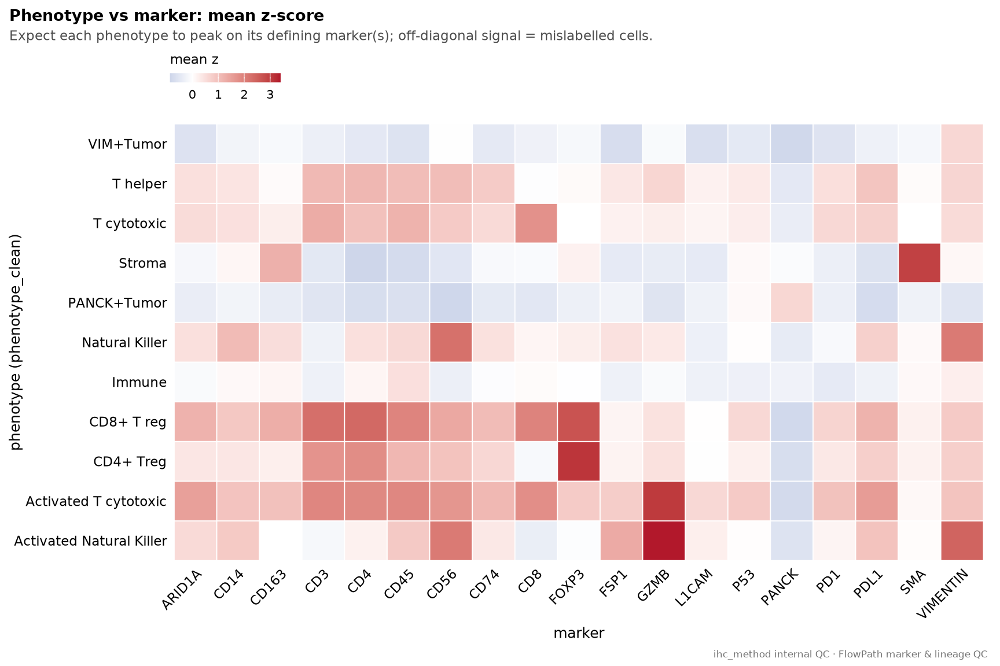
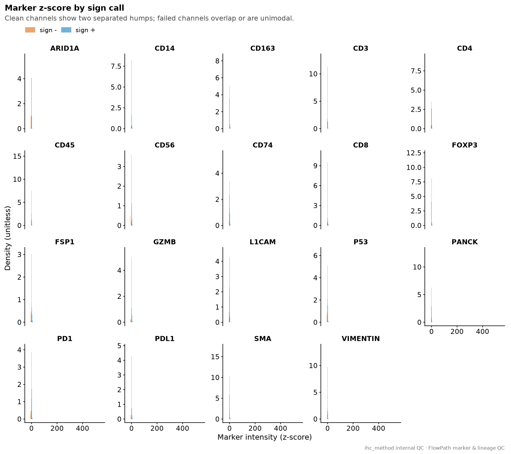
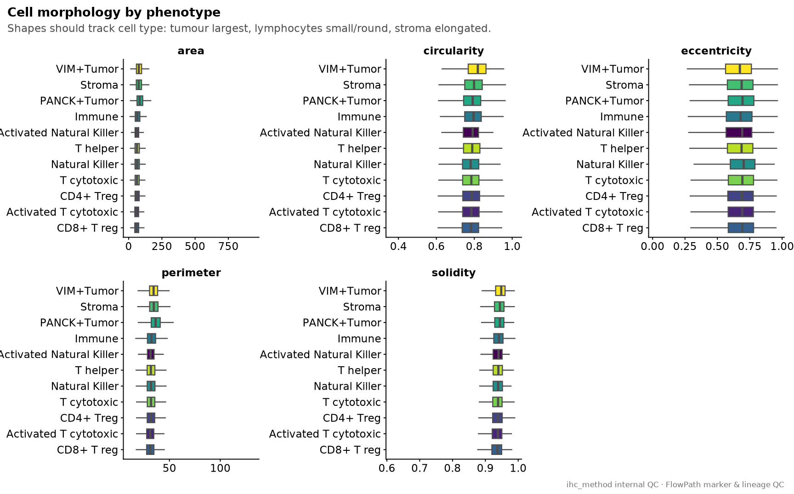
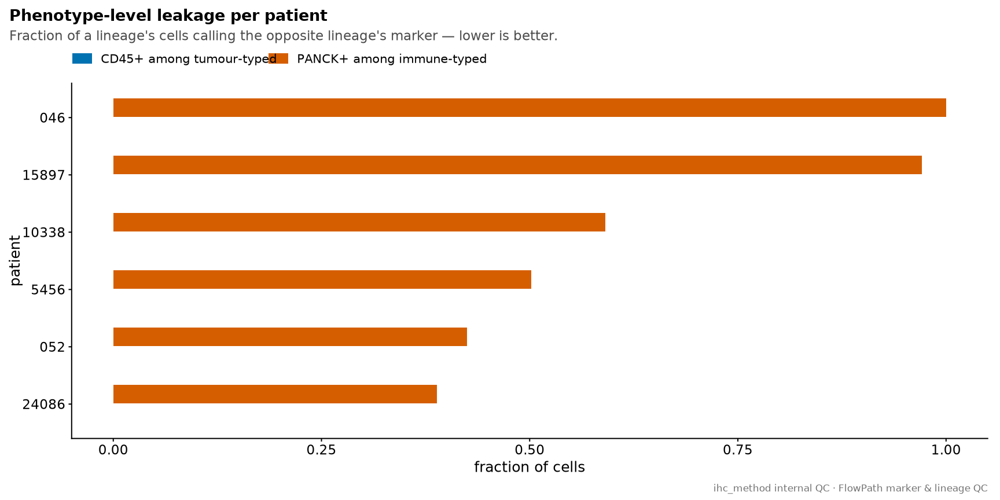
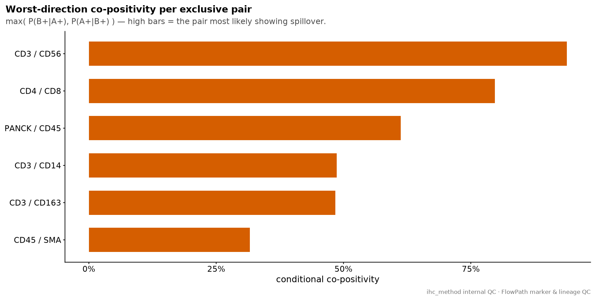
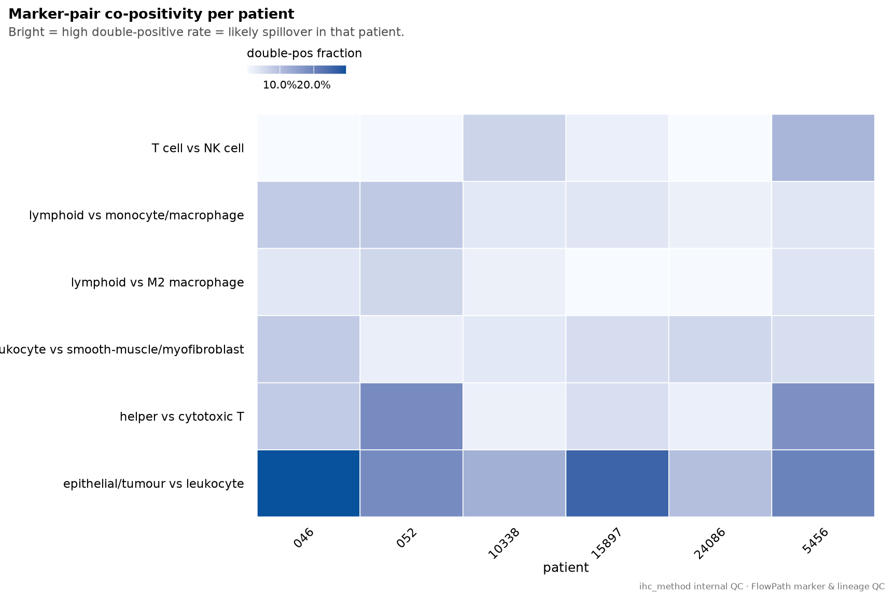

Last updated: 2026-08-31
Checks: 7 0
Knit directory: ihc_method/
This reproducible R Markdown analysis was created with workflowr (version 1.7.2). The Checks tab describes the reproducibility checks that were applied when the results were created. The Past versions tab lists the development history.
Great! Since the R Markdown file has been committed to the Git repository, you know the exact version of the code that produced these results.
Great job! The global environment was empty. Objects defined in the global environment can affect the analysis in your R Markdown file in unknown ways. For reproduciblity it’s best to always run the code in an empty environment.
The command set.seed(20260630) was run prior to running
the code in the R Markdown file. Setting a seed ensures that any results
that rely on randomness, e.g. subsampling or permutations, are
reproducible.
Great job! Recording the operating system, R version, and package versions is critical for reproducibility.
Nice! There were no cached chunks for this analysis, so you can be confident that you successfully produced the results during this run.
Great job! Using relative paths to the files within your workflowr project makes it easier to run your code on other machines.
Great! You are using Git for version control. Tracking code development and connecting the code version to the results is critical for reproducibility.
The results in this page were generated with repository version a444e83. See the Past versions tab to see a history of the changes made to the R Markdown and HTML files.
Note that you need to be careful to ensure that all relevant files for
the analysis have been committed to Git prior to generating the results
(you can use wflow_publish or
wflow_git_commit). workflowr only checks the R Markdown
file, but you know if there are other scripts or data files that it
depends on. Below is the status of the Git repository when the results
were generated:
Ignored files:
Ignored: .Rhistory
Ignored: .Rproj.user/
Ignored: data/
Ignored: output/figures/
Ignored: output/summary_patient.csv
Ignored: output/summary_region.csv
Ignored: renv/library/
Ignored: renv/staging/
Note that any generated files, e.g. HTML, png, CSS, etc., are not included in this status report because it is ok for generated content to have uncommitted changes.
These are the previous versions of the repository in which changes were
made to the R Markdown (analysis/marker_qc.Rmd) and HTML
(docs/marker_qc.html) files. If you’ve configured a remote
Git repository (see ?wflow_git_remote), click on the
hyperlinks in the table below to view the files as they were in that
past version.
| File | Version | Author | Date | Message |
|---|---|---|---|---|
| Rmd | a444e83 | bolt3x | 2026-08-31 | :art: Put the multi-panel figures on shared scales |
| html | f1342a0 | sceriff0 | 2026-08-27 | :wrench: full site with various annotations |
| Rmd | 2089263 | bolt3x | 2026-08-26 | :sparkles: One page per phenotyping arm, and fill arm 1’s scores from thr_head&neck.xlsx |
| Rmd | fa998cb | bolt3x | 2026-08-26 | :bug: Skip the analysis sections when an arm has no cells, instead of failing chunk by chunk |
| Rmd | 41480e6 | bolt3x | 2026-08-26 | :recycle: Support three phenotyping arms instead of one all-slide export |
| html | 794c4ea | sceriff0 | 2026-08-26 | :wrench: improving plots |
| html | 3ad97a4 | sceriff0 | 2026-08-24 | :wrench: improving plots |
| Rmd | 2e30592 | bolt3x | 2026-08-24 | :recycle: import the seven tidyverse packages we use, not the metapackage |
| Rmd | 469205b | bolt3x | 2026-08-17 | :recycle: route every figure through the shared scales, widths and n helpers |
| html | 8e6abe3 | sceriff0 | 2026-08-12 | :wrench: full site, let’s go |
| html | c5d0eaa | sceriff0 | 2026-08-12 | Revert ":wrench: built the site" |
| html | 70924d7 | sceriff0 | 2026-08-12 | :wrench: built the site |
| Rmd | 360ee92 | bolt3x | 2026-08-12 | :recycle: reorganise the workflowr site into four ordered parts |
Internal QC of the FlowPath gating, with no external reference: every check below asks whether the marker calls are self-consistent, not whether they match bulk RNA, deconvolution or the clinical record. Those comparisons live on the molecular pages; a disagreement there is only interpretable once the checks here pass.
Two parts, both reading the whole-slide ihc_data:
| part | asks | fails when |
|---|---|---|
| 1 | is each channel usable, and does it agree with the phenotype it defines? | a channel is unimodal, unused, or a phenotype’s defining marker is not enriched in it |
| 2 | do the lineages stay exclusive, or do markers leak across them? | CD45 fires inside tumour phenotypes, PANCK inside immune ones, or a marker pair co-fires above chance |
CAP is the shared figure caption; both parts stamp it on
every plot so an exported PDF still says which report it came from.
Every value below is derived from a single input, with no external reference:
ihc_data — FlowPath single cells, deduplicated to
one copy per patient (whole slide). Each cell carries a
phenotype label and, for each marker, a value / z-score /
sign triple — under whichever of the three export spellings the file
uses (code/cell_tables.R).Notation used throughout. ihc_marker_long(ihc_data)
reshapes the whole set of imaged cells to one row per (cell,
marker) pair, over the markers in ihc_markers (=
marker_gene_map$marker, excluding
wrongL1CAM/DAPI):
raw = marker_value(cell, marker) the intensity the export carries
zscore = marker_zscore(cell, marker)
sign = marker_sign(cell, marker) verbatim, for display
gated = marker_gated(cell, marker) FALSE = a gate never evaluated this marker
on this cell — NOT the same as negative
pos = marker_pos(cell, marker) TRUE only for an explicitly positive signgated is the distinction the sign string alone hides:
FlowPath leaves an ungated column blank and mirage writes
·, both of which are “never measured”, not “negative”.
Panels that would otherwise count an unmeasured cell as a negative one
filter on gated first.
phenotype_clean is the cell type. All patient ids are
mapped to the shared slide space by slide_key(). The report
restricts to typed cells: the cell type is not NA and
not “Unknown”.
mk_long <- ihc_marker_long(ihc_data) |>
filter(!is.na(phenotype_clean), phenotype_clean != "Unknown")
cat("cells:", dplyr::n_distinct(mk_long$cell_id),
"| markers:", dplyr::n_distinct(mk_long$marker),
"| phenotypes:", dplyr::n_distinct(mk_long$phenotype_clean), "\n")cells: 405697 | markers: 19 | phenotypes: 11 For each phenotype and marker, over the typed cells of that phenotype:
mean_z(type, marker) = average of <marker>_zscore over cells of that type
pct_pos(type, marker) = fraction of those cells positive for the markerwhere: - both averages use na.rm = TRUE (a positive cell counts as 1, negative as 0).
The heatmap fills each (marker, type) tile with mean_z
(diverging scale centred at 0).
conc <- mk_long |>
group_by(phenotype_clean, marker) |>
summarise(mean_z = mean(zscore, na.rm = TRUE),
pct_pos = mean(pos, na.rm = TRUE), .groups = "drop")
ggplot(conc, aes(marker, phenotype_clean, fill = mean_z)) +
geom_tile(colour = "white", linewidth = 0.3) +
scale_fill_div(midpoint = 0, name = "mean z", guide = guide_cbar()) +
labs(title = "Phenotype vs marker: mean z-score",
subtitle = "Expect each phenotype to peak on its defining marker(s); off-diagonal signal = mislabelled cells.",
# Both axes are categorical and their ticks name the variable already
# (marker symbols, phenotype labels), so a title would only repeat them.
x = NULL, y = NULL, caption = CAP) +
theme_paper_tile() +
theme(axis.text.x = element_text(angle = 45, hjust = 1))
Defining-marker check. expected is a
fixed table giving the defining marker for each phenotype. Within each
phenotype the markers are ranked by descending mean z-score:
rank_z(type, marker) = rank of the marker's mean_z within the phenotype
(rank 1 = largest mean_z)
rank_of_defining = rank_z of that phenotype's defining marker
pass = rank_of_defining <= 2where: - the defining-marker row is kept by joining on the
expected table; - pass means the defining marker is among
the phenotype’s top-2 mean-z signals.
mean_z is rounded to 2 dp; rows are sorted by descending
rank_of_defining.
# Encode the expected defining marker(s) per phenotype and check it is the top
# (or near-top) signal. Flags phenotypes whose defining marker is not their max.
expected <- tibble::tribble(
~phenotype_clean, ~marker,
"PANCK+Tumor", "PANCK",
"VIM+Tumor", "VIMENTIN",
"T helper", "CD4",
"T cytotoxic", "CD8",
"Activated T cytotoxic", "CD8",
"CD4+ Treg", "FOXP3",
"CD8+ T reg", "FOXP3",
"Natural Killer", "CD56",
"Activated Natural Killer", "CD56",
"Immune", "CD45",
"Stroma", "SMA"
)
check <- conc |>
group_by(phenotype_clean) |>
mutate(rank_z = rank(-mean_z)) |>
inner_join(expected, by = c("phenotype_clean", "marker")) |>
transmute(phenotype_clean, defining_marker = marker,
mean_z = round(mean_z, 2), rank_of_defining = as.integer(rank_z),
pass = rank_z <= 2) |>
arrange(desc(rank_of_defining))
knitr::kable(check, caption = "Is each phenotype's defining marker among its top-2 signals?")| phenotype_clean | defining_marker | mean_z | rank_of_defining | pass |
|---|---|---|---|---|
| Activated T cytotoxic | CD8 | 1.79 | 5 | FALSE |
| Activated Natural Killer | CD56 | 2.11 | 3 | FALSE |
| CD4+ Treg | FOXP3 | 3.12 | 1 | TRUE |
| CD8+ T reg | FOXP3 | 2.70 | 1 | TRUE |
| Immune | CD45 | 0.49 | 1 | TRUE |
| Natural Killer | CD56 | 2.25 | 1 | TRUE |
| PANCK+Tumor | PANCK | 0.63 | 1 | TRUE |
| Stroma | SMA | 2.95 | 1 | TRUE |
| T cytotoxic | CD8 | 1.74 | 1 | TRUE |
| T helper | CD4 | 1.14 | 1 | TRUE |
| VIM+Tumor | VIMENTIN | 0.63 | 1 | TRUE |
Per marker, over all cells with a finite z-score (typed and untyped —
ihc_marker_long(ihc_data) is re-derived here without the
phenotype filter).
Bimodality. Sarle’s bimodality coefficient on the marker’s z-scores:
BC = (skew^2 + 1) / (kurtosis_excess + 3*(n-1)^2 / ((n-2)*(n-3)))where: - skew = skewness of the finite z-scores (mean of the cubed standardised values); - kurtosis_excess = excess kurtosis of those z-scores (mean of the 4th-power standardised values, minus 3); - n = number of finite z-scores; - BC is NA if n < 4 or the z-score sd is 0.
dip_p is Hartigan’s dip-test p-value
(diptest::dip.test) when the package is installed and n
>= 4, else NA.
Sign-vs-zscore separability. With the
positive/negative split from pos(cell, marker):
neg_max = largest z-score among the marker's sign-negative cells
pos_min = smallest z-score among the marker's sign-positive cells
separable = pos_min > neg_max
cutoff = (neg_max + pos_min) / 2 when separable, else NA
likely_bimodal = BC > 0.555 OR dip_p < 0.05Rows are sorted by descending BC.
bimodality_coef <- function(x) { # Sarle's BC
x <- x[is.finite(x)]; n <- length(x)
if (n < 4) return(NA_real_)
m <- mean(x); s <- sd(x); if (s == 0) return(NA_real_)
g <- mean(((x - m) / s)^3) # skewness
k <- mean(((x - m) / s)^4) - 3 # excess kurtosis
(g^2 + 1) / (k + 3 * (n - 1)^2 / ((n - 2) * (n - 3)))
}
dip_p <- function(x) {
x <- x[is.finite(x)]
if (!requireNamespace("diptest", quietly = TRUE) || length(x) < 4) return(NA_real_)
suppressWarnings(diptest::dip.test(x)$p.value)
}
channel_qc <- ihc_marker_long(ihc_data) |>
filter(!is.na(zscore)) |>
group_by(marker) |>
summarise(
n = n(),
bc = bimodality_coef(zscore),
dip_p = dip_p(zscore),
neg_max = suppressWarnings(max(zscore[!pos], na.rm = TRUE)),
pos_min = suppressWarnings(min(zscore[pos], na.rm = TRUE)),
.groups = "drop"
) |>
mutate(
separable = is.finite(neg_max) & is.finite(pos_min) & pos_min > neg_max,
cutoff = if_else(separable, (neg_max + pos_min) / 2, NA_real_),
likely_bimodal = bc > 0.555 | (!is.na(dip_p) & dip_p < 0.05)
) |>
arrange(desc(bc))
knitr::kable(channel_qc, digits = 3,
caption = "Per-channel bimodality and sign-vs-zscore separability")| marker | n | bc | dip_p | neg_max | pos_min | separable | cutoff | likely_bimodal |
|---|---|---|---|---|---|---|---|---|
| SMA | 1888301 | 0.677 | NA | 0.700 | 0.20 | FALSE | NA | TRUE |
| VIMENTIN | 1888301 | 0.475 | NA | 0.500 | -0.50 | FALSE | NA | FALSE |
| PANCK | 1888301 | 0.438 | NA | -0.500 | -0.80 | FALSE | NA | FALSE |
| CD8 | 1888301 | 0.393 | NA | 2.300 | 0.00 | FALSE | NA | FALSE |
| CD163 | 1888301 | 0.377 | NA | 3.100 | 0.80 | FALSE | NA | FALSE |
| FOXP3 | 1888301 | 0.287 | NA | 1.900 | 0.50 | FALSE | NA | FALSE |
| CD14 | 1888301 | 0.275 | NA | 1.300 | 0.70 | FALSE | NA | FALSE |
| P53 | 1888301 | 0.172 | NA | 0.400 | -0.90 | FALSE | NA | FALSE |
| FSP1 | 1888301 | 0.148 | NA | 2.900 | 1.20 | FALSE | NA | FALSE |
| L1CAM | 1888301 | 0.110 | NA | 1.200 | -0.20 | FALSE | NA | FALSE |
| CD74 | 1888301 | 0.099 | NA | 1.800 | 0.70 | FALSE | NA | FALSE |
| GZMB | 1888301 | 0.097 | NA | 2.000 | 1.30 | FALSE | NA | FALSE |
| CD45 | 1888301 | 0.092 | NA | 0.350 | -0.35 | FALSE | NA | FALSE |
| CD3 | 1888301 | 0.076 | NA | 0.800 | -0.25 | FALSE | NA | FALSE |
| CD4 | 1888301 | 0.058 | NA | 0.500 | -0.50 | FALSE | NA | FALSE |
| CD56 | 1888301 | 0.032 | NA | 4.400 | 0.90 | FALSE | NA | FALSE |
| PD1 | 1888301 | 0.024 | NA | 4.197 | 0.55 | FALSE | NA | FALSE |
| ARID1A | 1888301 | 0.022 | NA | 0.800 | -0.60 | FALSE | NA | FALSE |
| PDL1 | 1888301 | 0.010 | NA | 4.597 | 1.20 | FALSE | NA | FALSE |
Density of the z-scores per marker, over cells with a finite z-score
that a gate actually evaluated (gated), split by the
positive call (sign + / sign -). All panels
share one z-score x axis, so where a marker’s humps sit and how far
apart they are can be read across markers; y (density) stays free, since
a density curve’s height is fixed by the spread of the marker it belongs
to and carries no cross-panel meaning.
ihc_marker_long(ihc_data) |>
filter(!is.na(zscore), gated) |>
mutate(call = if_else(pos, "sign +", "sign -")) |>
ggplot(aes(zscore, fill = call)) +
geom_density(alpha = 0.55, colour = NA) +
# Shared x: the z-score is one unit across every channel, and "two separated
# humps" is a claim about WHERE on that axis they sit, so a per-marker x made
# every channel look equally well separated. y is free because density height is
# a normalisation artefact of each marker's own spread, not a measurement.
facet_wrap(~ marker, scales = "free_y") +
scale_fill_manual(values = c("sign +" = oi[1], "sign -" = oi[2]), name = NULL) +
labs(title = "Marker z-score by sign call",
subtitle = "Clean channels show two separated humps; failed channels overlap or are unimodal.",
x = "Marker intensity (z-score)", y = "Density (unitless)", caption = CAP)
Morphology features are whichever of area,
perimeter, eccentricity, solidity
are present in ihc_data, plus circularity when both
area and perimeter exist:
circularity = 4 * pi * area / perimeter^2Over typed cells, each feature is pivoted long and filtered to finite values; the plot is a per-phenotype boxplot (phenotypes ordered by median feature value, outliers hidden). Facets stay free-scaled here, unlike the z-score densities above: each panel is a different feature in a different unit — area in px², perimeter in px, eccentricity and solidity on 0..1 — so there is no shared range to put them on.
morph_feats <- intersect(c("area", "perimeter", "eccentricity", "solidity"),
names(ihc_data))
morph <- ihc_data |>
filter(!is.na(phenotype_clean), phenotype_clean != "Unknown") |>
mutate(circularity = if (all(c("area", "perimeter") %in% names(ihc_data)))
4 * pi * area / perimeter^2 else NA_real_) |>
select(phenotype_clean, any_of(c(morph_feats, "circularity"))) |>
pivot_longer(-phenotype_clean, names_to = "feature", values_to = "value") |>
filter(is.finite(value))
ggplot(morph, aes(reorder(phenotype_clean, value, FUN = median), value,
fill = phenotype_clean)) +
geom_boxplot(outlier.shape = NA, width = .6, colour = "grey30") +
# Free scales STAY: the panels are different features in different units (px²,
# px, unitless 0..1). Forcing one range would put area in the thousands and press
# eccentricity and solidity flat against the axis.
facet_wrap(~ feature, scales = "free") +
coord_flip() +
scale_fill_ordinal(guide = "none") +
labs(title = "Cell morphology by phenotype",
subtitle = "Shapes should track cell type: tumour largest, lymphocytes small/round, stroma elongated.",
x = NULL, y = NULL, caption = CAP)
ihc_data; no external
reference is joined.mean reductions carry na.rm = TRUE;
neg_max/pos_min return non-finite
(±Inf) when a marker has no negative (resp. positive) cell,
which drives separable = FALSE via the
is.finite guards.separable = FALSE means the sign call is not a pure
threshold on the z-score (the _sign+ and
_sign− z-score ranges overlap — likely thresholded on
_raw); its cutoff is then
NA.likely_bimodal uses an inclusive-or of BC > 0.555
and dip-p < 0.05; if diptest is absent the dip-p term is
NA and only BC decides.Single input: ihc_data, the FlowPath single cells
deduplicated to one copy per patient (whole slide).
“Patient p’s cells” means every row of ihc_data for that
patient; “the cohort” means all cells pooled across patients. All
patient ids are mapped to slide space by slide_key() (strip
non-digits, apply the typo fix 15879 ->
15897).
Cell labels:
marker+ cell = marker_pos(cell, marker) — the marker's sign column, whichever of
<marker>_sign / sign:<marker> / <marker>_positive the export carries
tumour-phenotype cell = phenotype_clean contains "Tumor"
(phenotype_clean = the text inside the parentheses of `phenotype`)
immune-phenotype cell = phenotype_clean is one of the literal immune labels belowThe immune-phenotype labels are: Immune,
T helper, T cytotoxic,
Activated T cytotoxic, CD4+ Treg,
CD8+ T reg, Natural Killer,
Activated Natural Killer (defined in the chunk below;
excludes Stroma / Unknown / Tumor). These two phenotype sets are read
directly from phenotype_clean, not through
the lineage() collapse. Missing
phenotype_clean is treated as the empty string, so it
matches neither set.
Per patient p, the fraction of one lineage’s phenotyped cells that call the opposite lineage’s marker:
cd45pos_in_tumorph(p) = (tumour-phenotype cells of p that are CD45+) / (tumour-phenotype cells of p)
panckpos_in_immune(p) = (immune-phenotype cells of p that are PANCK+) / (immune-phenotype cells of p)
n_cells(p) = all cells of p
where:
tumour-phenotype cell = phenotype_clean contains "Tumor"
immune-phenotype cell = phenotype_clean is one of the literal immune labels
CD45+ = marker_pos(cell, "CD45")
PANCK+ = marker_pos(cell, "PANCK")Each ratio is NA when its patient has no cell in the
corresponding phenotype set (any(...) guard); positivity is
never NA.
immune_ph <- c("Immune", "T helper", "T cytotoxic", "Activated T cytotoxic",
"CD4+ Treg", "CD8+ T reg", "Natural Killer", "Activated Natural Killer")
excl <- ihc_data |>
mutate(patient_id = slide_key(patient_id),
is_tumor_ph = str_detect(replace_na(phenotype_clean, ""), "Tumor"),
is_immune_ph = phenotype_clean %in% immune_ph,
panck_pos = marker_pos(ihc_data, "PANCK"),
cd45_pos = marker_pos(ihc_data, "CD45"))
spill <- excl |>
group_by(patient_id) |>
summarise(
n_cells = n(),
cd45pos_in_tumorph = if (any(is_tumor_ph)) mean(cd45_pos[is_tumor_ph], na.rm = TRUE) else NA_real_,
panckpos_in_immune = if (any(is_immune_ph)) mean(panck_pos[is_immune_ph], na.rm = TRUE) else NA_real_,
.groups = "drop"
)
knitr::kable(spill, digits = 3,
caption = "Per-patient phenotype-level leakage (want ~0)")| patient_id | n_cells | cd45pos_in_tumorph | panckpos_in_immune |
|---|---|---|---|
| 046 | 405697 | 0 | 1.000 |
| 052 | 378194 | 0 | 0.424 |
| 10338 | 235328 | 0 | 0.591 |
| 15897 | 202652 | 0 | 0.971 |
| 24086 | 283631 | 0 | 0.389 |
| 5456 | 382799 | 0 | 0.502 |
Bars are the two ratios above, per patient, dropping NA
entries.
spill |>
pivot_longer(c(cd45pos_in_tumorph, panckpos_in_immune),
names_to = "leak", values_to = "rate") |>
filter(!is.na(rate)) |>
mutate(leak = c(cd45pos_in_tumorph = "CD45+ among tumour-typed",
panckpos_in_immune = "PANCK+ among immune-typed")[leak]) |>
ggplot(aes(reorder(patient_id, rate), rate, fill = leak)) +
geom_col(position = position_dodge(width = .7), width = .65) +
coord_flip() +
scale_fill_manual(values = oi[c(1, 2)], name = NULL) +
labs(title = "Phenotype-level leakage per patient",
subtitle = "Fraction of a lineage's cells calling the opposite lineage's marker — lower is better.",
x = "Patient", y = "Fraction of the lineage's cells (unitless, 0-1)",
caption = CAP)
sign_pos is the per-cell positivity matrix: one logical
column per marker in ihc_markers, obtained by applying
is_pos to every <marker>_sign column and
stripping the _sign suffix. Each row is a cell of the
cohort; patient_id is
slide_key-normalised.
For a candidate pair of markers (a, b), retained only if both columns
exist in sign_pos, all counts are pooled over the
whole cohort:
n_a = cohort cells that are a+
n_b = cohort cells that are b+
n_both = cohort cells that are both a+ and b+ (double-positive)
pct_dp_all = n_both / (all cohort cells)
p(b | a) = n_both / n_a (share of a+ cells that are also b+)
p(a | b) = n_both / n_b (share of b+ cells that are also a+)
where:
marker+ cell = marker_pos(cell, marker)The two conditionals are set to NA when their
denominator (n_a or n_b) is 0.
pct_dp_all uses the all-cell denominator; the conditionals
use the single-marker positive counts.
# Per-cell marker positivity matrix: one logical column per marker, named for the
# marker rather than for whichever sign column the export used. A marker the panel
# does not carry comes back all-FALSE, so its pairs report 0% co-positivity instead
# of aborting the chunk.
sign_pos <- marker_matrix(ihc_data, ihc_markers) |>
mutate(patient_id = slide_key(ihc_data$patient_id), .before = 1)
# Literature-backed mutually-exclusive lineage marker pairs (+ known exception).
exclusivity_pairs <- tibble::tribble(
~a, ~b, ~pair_label, ~expected_copos, ~reference,
"PANCK", "CD45", "epithelial/tumour vs leukocyte", "~0 (rare hybrid CTCs)", "Nandedkar 1998",
"CD4", "CD8", "helper vs cytotoxic T", "~3% peripheral DP-T", "Overgaard 2023 (Biomedicines)",
"CD3", "CD56", "T cell vs NK cell", "rare CD3+CD56+ NKT", "std NK/NKT gating",
"CD3", "CD14", "lymphoid vs monocyte/macrophage", "~0 distinct lineages", "flow-panel convention",
"CD3", "CD163", "lymphoid vs M2 macrophage", "~0 (lymphocytes CD163-)", "Roberts 2004",
"CD45", "SMA", "leukocyte vs smooth-muscle/myofibroblast","~0 distinct lineages", "stromal-marker convention"
) |>
# keep only pairs whose markers are both present
filter(a %in% names(sign_pos), b %in% names(sign_pos))
pair_stats <- exclusivity_pairs |>
rowwise() |>
mutate(
n_a = sum(sign_pos[[a]], na.rm = TRUE),
n_b = sum(sign_pos[[b]], na.rm = TRUE),
n_both = sum(sign_pos[[a]] & sign_pos[[b]], na.rm = TRUE),
pct_dp_all = n_both / nrow(sign_pos),
p_b_given_a = ifelse(n_a > 0, n_both / n_a, NA_real_),
p_a_given_b = ifelse(n_b > 0, n_both / n_b, NA_real_)
) |>
ungroup() |>
select(pair = pair_label, a, b, expected_copos, reference,
n_both, pct_dp_all, p_b_given_a, p_a_given_b)
knitr::kable(pair_stats, digits = 4,
caption = "Mutually-exclusive marker pairs: observed vs expected co-positivity")| pair | a | b | expected_copos | reference | n_both | pct_dp_all | p_b_given_a | p_a_given_b |
|---|---|---|---|---|---|---|---|---|
| epithelial/tumour vs leukocyte | PANCK | CD45 | ~0 (rare hybrid CTCs) | Nandedkar 1998 | 377289 | 0.1998 | 0.2712 | 0.6123 |
| helper vs cytotoxic T | CD4 | CD8 | ~3% peripheral DP-T | Overgaard 2023 (Biomedicines) | 190637 | 0.1010 | 0.3349 | 0.7971 |
| T cell vs NK cell | CD3 | CD56 | rare CD3+CD56+ NKT | std NK/NKT gating | 68529 | 0.0363 | 0.1574 | 0.9384 |
| lymphoid vs monocyte/macrophage | CD3 | CD14 | ~0 distinct lineages | flow-panel convention | 97642 | 0.0517 | 0.2243 | 0.4869 |
| lymphoid vs M2 macrophage | CD3 | CD163 | ~0 (lymphocytes CD163-) | Roberts 2004 | 57857 | 0.0306 | 0.1329 | 0.4839 |
| leukocyte vs smooth-muscle/myofibroblast | CD45 | SMA | ~0 distinct lineages | stromal-marker convention | 94688 | 0.0501 | 0.1537 | 0.3165 |
Worst-direction co-positivity per pair:
max_cond = larger of p(b | a) and p(a | b)plotted for the pairs with a finite value.
# The worst-case conditional co-positivity per pair (max of the two directions).
pair_stats |>
mutate(max_cond = pmax(p_b_given_a, p_a_given_b, na.rm = TRUE),
pair = sprintf("%s / %s", a, b)) |>
filter(is.finite(max_cond)) |>
ggplot(aes(reorder(pair, max_cond), max_cond)) +
geom_col(fill = oi[2], width = .65) +
coord_flip() +
scale_y_continuous(labels = scales::percent_format(accuracy = 1)) +
labs(title = "Worst-direction co-positivity per exclusive pair",
subtitle = "max( P(B+|A+), P(A+|B+) ) — high bars = the pair most likely showing spillover.",
x = NULL, y = "Conditional co-positivity (unitless, 0-1)", caption = CAP)
Per-patient double-positive fraction, one value per (patient, pair), over all of that patient’s cells:
dp(p, a, b) = (cells of p that are both a+ and b+) / (all cells of p)This denominator is all of patient p’s cells, i.e. the per-patient
analogue of pct_dp_all, not of the conditional rates
above.
per_pat <- exclusivity_pairs |>
select(a, b, pair_label) |>
purrr::pmap_dfr(function(a, b, pair_label) {
sign_pos |>
group_by(patient_id) |>
summarise(dp = mean(.data[[a]] & .data[[b]], na.rm = TRUE), .groups = "drop") |>
mutate(pair = pair_label)
})
if (nrow(per_pat) > 0) {
ggplot(per_pat, aes(patient_id, pair, fill = dp)) +
geom_tile(colour = "white", linewidth = 0.3) +
scale_fill_seq(labels = scales::percent_format(accuracy = .1),
name = "double-pos fraction", guide = guide_cbar()) +
labs(title = "Marker-pair co-positivity per patient",
subtitle = "Bright = high double-positive rate = likely spillover in that patient.",
x = "Patient", y = NULL, caption = CAP) +
theme_paper_tile() +
theme(axis.text.x = element_text(angle = 45, hjust = 1))
}
Pairs held out of the tribble because their phenotypes are defined to
overlap (co-positivity is expected, not an artifact): PANCK/VIMENTIN
(the VIM+Tumor EMT phenotype) and CD8/FOXP3 (the
CD8+ T reg phenotype).
ihc_data (whole slide); every metric is a
count ratio, no external reference.pct_dp_all and heatmap
dp divide by all cells (whole cohort / the patient);
p_b_given_a / p_a_given_b divide by the
single-marker positive counts (n_a / n_b). The
conditional rates and pair counts are pooled cohort-wide, whereas
leakage and the heatmap are per patient.phenotype_clean text and the
literal immune-phenotype list, not the phenotype_lineage
collapse.
sessionInfo()R version 4.3.2 (2023-10-31)
Platform: x86_64-pc-linux-gnu (64-bit)
Running under: Rocky Linux 9.5 (Blue Onyx)
Matrix products: default
BLAS/LAPACK: FlexiBLAS OPENBLAS; LAPACK version 3.11.0
locale:
[1] LC_CTYPE=C.UTF-8 LC_NUMERIC=C LC_TIME=C.UTF-8
[4] LC_COLLATE=C.UTF-8 LC_MONETARY=C.UTF-8 LC_MESSAGES=C.UTF-8
[7] LC_PAPER=C.UTF-8 LC_NAME=C LC_ADDRESS=C
[10] LC_TELEPHONE=C LC_MEASUREMENT=C.UTF-8 LC_IDENTIFICATION=C
time zone: Europe/Rome
tzcode source: system (glibc)
attached base packages:
[1] stats4 stats graphics grDevices datasets utils methods
[8] base
other attached packages:
[1] data.table_1.18.4 fs_2.1.0
[3] readxl_1.5.0 DESeq2_1.42.1
[5] SummarizedExperiment_1.32.0 Biobase_2.62.0
[7] MatrixGenerics_1.14.0 matrixStats_1.5.0
[9] GenomicRanges_1.54.1 GenomeInfoDb_1.38.8
[11] IRanges_2.36.0 S4Vectors_0.40.2
[13] BiocGenerics_0.48.1 here_1.0.2
[15] forcats_1.0.1 stringr_1.6.0
[17] ggplot2_4.0.3 purrr_1.2.2
[19] readr_2.2.0 tidyr_1.3.2
[21] tibble_3.3.1 dplyr_1.2.1
[23] workflowr_1.7.2
loaded via a namespace (and not attached):
[1] gtable_0.3.6 xfun_0.58 bslib_0.9.0
[4] processx_3.9.0 lattice_0.23-1 callr_3.7.6
[7] tzdb_0.5.0 vctrs_0.7.3 tools_4.3.2
[10] ps_1.9.3 bitops_1.1-0 generics_0.1.4
[13] parallel_4.3.2 pkgconfig_2.0.3 Matrix_1.6-5
[16] RColorBrewer_1.1-3 S7_0.2.2 lifecycle_1.0.5
[19] GenomeInfoDbData_1.2.11 compiler_4.3.2 farver_2.1.2
[22] git2r_0.33.0 codetools_0.2-20 getPass_0.2-4
[25] httpuv_1.6.12 htmltools_0.5.9 sass_0.4.10
[28] RCurl_1.98-1.20 yaml_2.3.12 crayon_1.5.3
[31] later_1.4.8 pillar_1.11.1 jquerylib_0.1.4
[34] whisker_0.4.1 BiocParallel_1.36.0 DelayedArray_0.28.0
[37] cachem_1.1.0 abind_1.4-8 locfit_1.5-9.12
[40] tidyselect_1.2.1 digest_0.6.39 stringi_1.8.7
[43] labeling_0.4.3 rprojroot_2.1.1 fastmap_1.2.0
[46] grid_4.3.2 SparseArray_1.2.4 cli_3.6.6
[49] magrittr_2.0.5 S4Arrays_1.2.1 withr_3.0.3
[52] scales_1.4.0 promises_1.5.0 rmarkdown_2.31
[55] XVector_0.42.0 httr_1.4.7 otel_0.2.0
[58] cellranger_1.1.0 hms_1.1.4 evaluate_1.0.5
[61] knitr_1.51 viridisLite_0.4.3 rlang_1.2.0
[64] Rcpp_1.1.1-1.1 glue_1.8.1 renv_1.2.3
[67] rstudioapi_0.15.0 jsonlite_2.0.0 R6_2.6.1
[70] zlibbioc_1.48.2